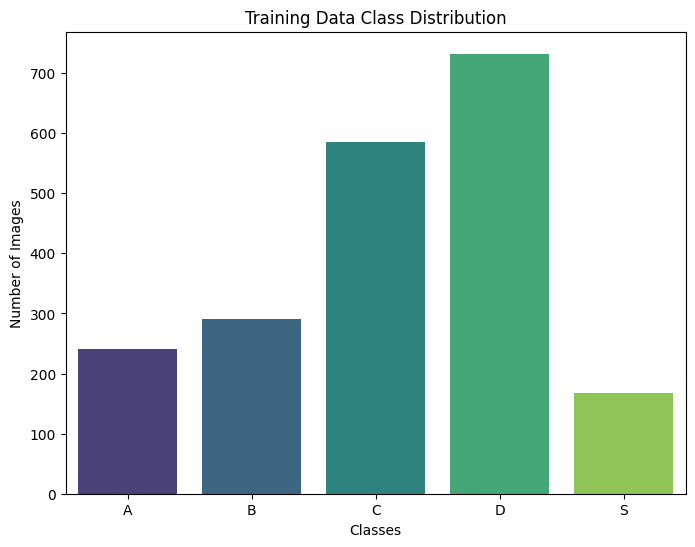
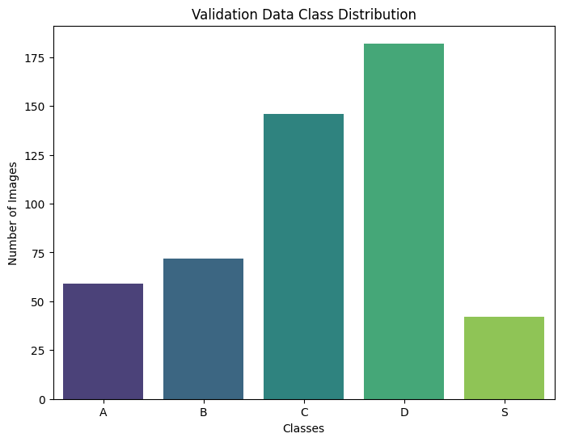
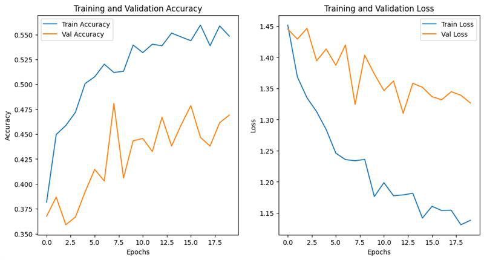
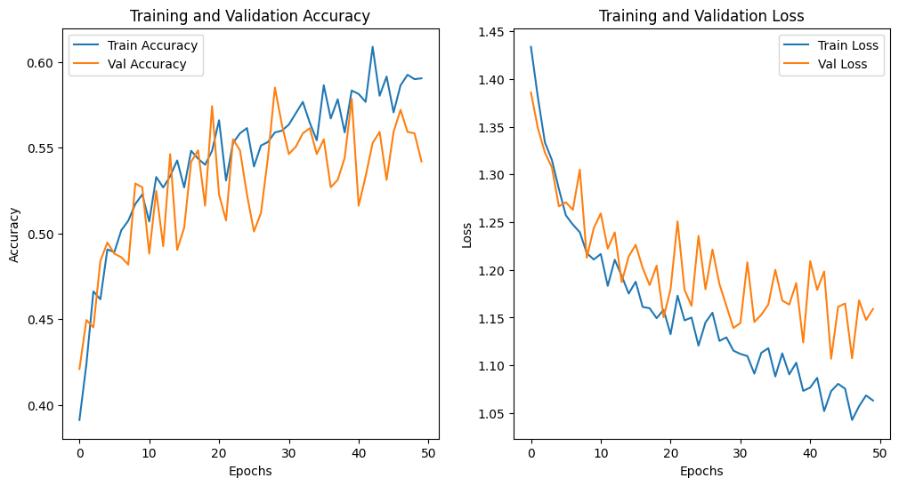

01 / Question & dataset
Recognizing construction types from appearance.
The application motivation is earthquake preparedness. The measured task is to assign a street-view image to one of five building categories.
The report connects building construction to earthquake preparedness and investigates whether texture and visual patterns can identify the category. The dataset contains 2,516 grayscale images, each 400 × 300 pixels. The project evaluates image classification; structural condition and earthquake resistance are not measured. [1, §§1, 3.1]
The training and validation distribution plots show more D and C examples than the other categories. D is the largest class; S is the smallest. That imbalance matters when interpreting an overall accuracy alongside errors for each class. [1, Figure 2]
Inspect the report’s class-distribution plots
Training set

Validation set

02 / Transfer-learning pipeline
Adapt the inputs. Reuse learned visual features.
The team chose a pretrained convolutional model to learn from complex spatial patterns. The report argues against linear models operating on image pixels, but includes no measured linear-model baseline. [1, §2]
The shared preparation and classification task
- 01
Resize
400 × 300
↓
224 × 224Standardize the input size.
- 02
Adapt channels
Grayscale → RGB
Supply three channels; conversion details are unspecified.
- 03
Prepare & augment
Normalize
Rotate · ShiftReport: [0, 1] rescaling and random rotations and width/height shifts.
Freezing layers preserves their weights during training. Transfer learning reuses a representation learned on another task while trainable components adapt to the new labels. These are general mechanisms; the report does not identify which VGG16 weights were updated. [3]
A note on model-specific normalization
The report names normalization functions and [0, 1] rescaling without specifying a framework. If Keras’s ImageNet-pretrained VGG16 was used, its documented preprocessing converts RGB to BGR and subtracts channel means without scaling. The implementation would need to be inspected to resolve compatibility; this page does not assume a particular function was used. [2]
03 / Three experiments
Three ways to treat the same classification problem.
The interventions change the image representation or dataset selection. Each still uses VGG16.
Baseline / No additional filter
Train the pretrained model longer.
The initial run reached 56% training and 54% validation accuracy after 10 epochs. The team then increased training duration: training accuracy rose to 60%, while validation fell to 50%. The widening gap was interpreted as overfitting. Both Kaggle scores nevertheless increased. [1, §4.1, Table 1]
Representation / Canny edges
Emphasize changes in image intensity.
Canny processing was introduced to expose boundaries that might carry structural information. The report describes Gaussian smoothing followed by gradient magnitude and direction. [1, §4.2]
Gaussian smoothing · coordinates measured from the kernel center
The full Canny algorithm also thins edges using non-maximum suppression and links qualifying edges using hysteresis thresholds. This is algorithmic context from OpenCV; project threshold values are not reported. [4]
After 20 epochs, the report records 55% training and 45% validation accuracy. The authors suggest that edges from trees or ground surfaces could hurt generalization. That explanation is a hypothesis; no background-removal ablation is reported. [1, §4.2]
Dataset selection / Feature similarity
Compare photographs in VGG16 feature space.
The third approach extracts feature vectors using VGG16 and assesses image similarity with Euclidean distance. Smaller distances indicate closer feature representations. The filtering threshold and rule for retaining images are unspecified. [1, §4.3]
Distance between two n-dimensional feature vectors
The table reports 58% training and 57.8% validation accuracy, but the public score decreases relative to the baseline. The authors suggest that useful examples may have been removed; the report does not establish which removed images were essential. Whole-image similarity does not establish that background objects were excluded. [1, §§4.3–5]
04 / Reported results
The leading approach depends on the evaluation.
Plain VGG16 leads on the public score. Canny leads on the private score. Similarity filtering leads on reported validation accuracy.
Compare the final reported configurations
The baseline has the highest public score (0.497); Canny has the highest private score (0.412). There is no single leader across both.
| Configuration | Epochs | Train accuracy | Validation accuracy | Public score | Private score |
|---|---|---|---|---|---|
| No filter · initial | 10 | 56% | 54% | 0.464 | 0.372 |
| No filter · longer run | >10 | 60% | 50% | 0.497 | 0.389 |
| Canny edges | 20 | 55% | 45% | 0.468 | 0.412 |
| Similarity filter | 30* | 58% | 57.8% | 0.441* | 0.403 |
Emphasis marks the highest validation, public, and private results. *The similarity plot extends to roughly 50 epochs; the paragraph gives public score 0.443, while both tables give 0.441. These discrepancies remain unresolved. See the source notes.
Training fit
Training accuracy measures fit to examples used for learning. A higher value alone does not establish better generalization.
Held-out behavior
Local validation and Kaggle evaluation give different rankings here. Their results should be read separately; the report does not specify the competition scoring metric.
05 / Reading the diagnostics
A strong tendency to predict wooden frames.
The report’s Figure 2(c), placed in the Canny section, shows many examples from other categories being predicted as D. The matrix below reproduces every displayed count. Its relationship to the tabulated validation result is unresolved. [1, §4.2, Figure 2]
Inspect the reported confusion matrix
| True class | A | B | C | D | S |
|---|---|---|---|---|---|
| A | |||||
| B | |||||
| C | |||||
| D | |||||
| S |
Outlined diagonal cells are correct classifications.
Off diagonal / Misclassification
True C → Predicted D
104 images
104 of 146 masonry examples were predicted as wooden-framed buildings (71.2%).
Correctly recognized in this true class
14 / 146 · 9.6% recall
Recall = correct predictions for a class ÷ all examples of that true class.
The matrix gives 147 / 479 ≈ 30.7% accuracy, while the Canny table gives 45% validation accuracy. They cannot describe the same aligned predictions on the same evaluation set. The report does not explain the mismatch.
The report’s text describes 104 class-C predictions as correct. In the displayed matrix, the correct C count is 14; 104 is the C→D error count. D accounts for 326 of 479 predictions (68.1%, calculated). Class S has zero correct predictions in this matrix. These observations show why class-level errors matter alongside an aggregate score.
The original learning curves
Canny · report Figure 1

Training accuracy improves while validation remains lower and fluctuates. Training loss falls more substantially than validation loss, consistent with the report’s concern about overfitting.
Similarity · report Figure 3

Both losses decline initially, then training loss becomes progressively lower. The plotted history spans about 50 epochs, whereas the table lists 30; the report does not explain the checkpoint correspondence.
06 / Scope & future work
Evidence for a comparison, with limits on attribution.
More training widened the local accuracy gap.
The unfiltered model’s training/validation gap increased from 2 to 10 percentage points. Its Kaggle scores still improved, so the local and competition evaluations did not respond identically. [1, Table 1]
Additional processing gave mixed outcomes.
Canny and similarity filtering both have higher private scores than the final baseline, but lower public scores. Similarity filtering has the highest reported local validation accuracy. Different epoch counts and incomplete training details prevent a controlled attribution of these differences to the filters alone. [1, Table 4]
The proposed explanations remain hypotheses.
The authors suggest that Canny captures irrelevant background edges and that similarity filtering may remove useful examples. The report includes no ablation isolating either mechanism. [1, §§4.2–5]
Report consistency and reproducibility notes
| Item | What the source contains | Treatment on this page |
|---|---|---|
| Class-C interpretation | Text calls 104 correct; Figure 2(c) shows 14 correct and 104 C→D errors. | Matrix cells determine the displayed diagnostic; the text discrepancy is disclosed. |
| Canny accuracy | Table 2: 45% validation. Figure 2(c): 147 correct among 479 examples, or 30.7%. | Table and matrix are presented as separate, unresolved evidence. |
| Similarity public score | Paragraph: 0.443. Tables 3 and 4: 0.441. | Results use the value shared by both tables, with the paragraph value noted. |
| Similarity epochs | Table 3: 30. Figure 3: roughly 50 epochs. | No checkpoint correspondence is inferred. |
The report does not provide the classifier head, frozen-layer list, optimizer, learning rate, loss, batch size, split procedure, seed, Canny settings, similarity threshold, or Kaggle evaluation metric. Individual responsibilities are not specified; this page credits the work to both authors.
Proposed in the report
Try other backbones and further fine-tuning.
The stated next steps are to explore pretrained models such as EfficientNet or ResNet, and to unfreeze a few layers for additional fine-tuning. Performance for these extensions is not reported. [1, §6]
07 / Sources
The project evidence and its technical context.
The report supplies all project measurements and experiment descriptions. External documentation explains mechanisms and preprocessing; it supplies no additional measurements for this project.
- Project source
Ankur Singh and Indra Kumar. Are You In a Safe Building? Three-page project report. §§1–3: task and preparation; §4 and Tables 1–4: experiments and scores; Figures 1–3: diagnostics; §6: future work. The supporting repository’s PDF matches the supplied report.
- Model documentation
Keras. VGG16 and VGG19 models. Official input-shape and model-specific preprocessing documentation.
- Transfer-learning mechanism
François Chollet / Keras. Transfer learning & fine-tuning. Freezing pretrained layers and adapting representations to a new task.
- Edge-detection mechanism
OpenCV. Canny Edge Detection. Smoothing, gradients, non-maximum suppression, and hysteresis thresholding.
- Presentation reference
Afshine Amidi and Shervine Amidi. CS 230 — Convolutional Neural Networks Cheatsheet. Its compact visual explanations informed the presentation. New diagrams and interactive charts were made for this study; original diagnostic plots are credited to the project report.